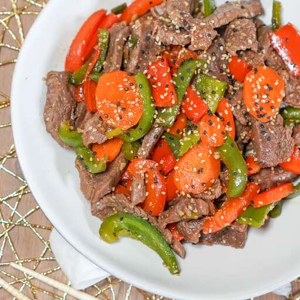

Quick Beef Stir Fry

Description
This is how to make a delicious and easy beef stir-fry. This takes about 25 minutes to make and will keep you (and your wallet) happy.
Ingredients
- 2 tablespoons vegetable oil
- 1 pound beef sirloin, cut into 2-inch strips
- 1.5 cups fresh broccoli
- 1 sliced red bell pepper
- 2 carrots, thinly sliced
- 1 chopped green onion
- 1 teaspoon minced garlic
- 2 tablespoons soy sauce
- 2 tablespoons seasame seeds, toasted
Steps
- Heat vegetable oil in a large wok or skillet over medium high heat.
- Add beef and stir it until the beef is browned (about 3-4 minutes). Once cooked, move beef to the side of the wok.
- Add broccoli, bell pepper, carrots, green onion, and garlic to the wok. Stir for about 2 minutes.
- Combine beef and vegetables and stir. Season with soy sauce and sesame seeds. Stir until vegetables are tender (about 2 minutes).
- Plate and enjoy!